Authors: Sergey Shirobokov, Ben Jaderberg, Katerina Hristova, George Tsoukalas, Johannes Bausch, Eric Wieser, +19 more · DeepMind, Meta
Published: 2026-11-06 · Category: quant-ph
Citation: arXiv:2611.09822v1 · PDF · abstract page
AI-Driven Discovery Yields 290x Efficiency Gains in Quantum Arithmetic via Formal Verification
1. What It Is & Why It Matters
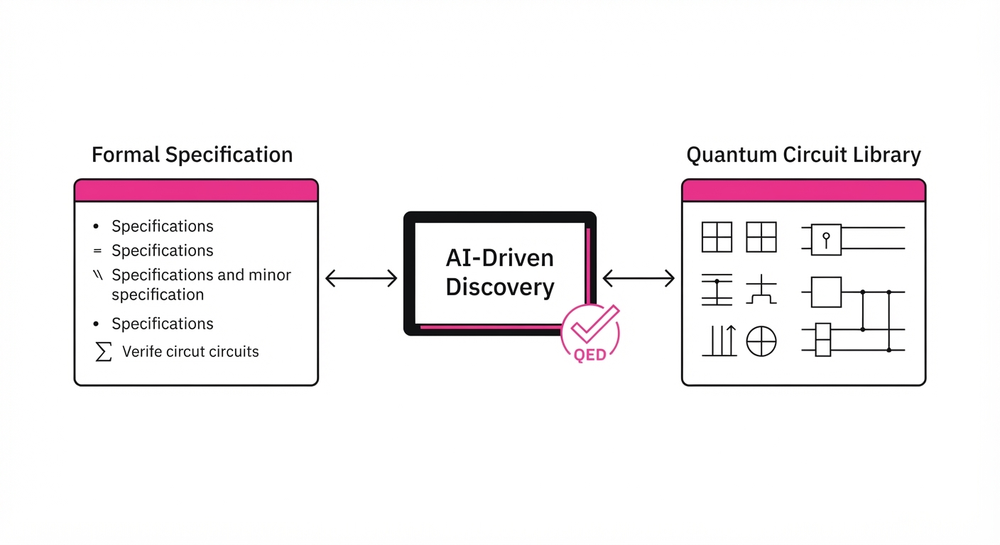
Quantum computing is currently bottlenecked by a "human-in-the-loop" design process. Because quantum states exist in high-dimensional Hilbert spaces, they are notoriously difficult to simulate on classical hardware. Consequently, quantum algorithm design has remained an artisanal craft—a slow, error-prone endeavor where experts manually craft circuits, often leaving significant optimization "on the table."
This research introduces an automated discovery loop that replaces intuition-based design with formal verification. By embedding a quantum program library within the Lean theorem prover, the authors allow AI agents to synthesize, test, and mathematically prove the correctness of quantum circuits before they are ever run on hardware.
- The Problem: Existing quantum algorithms are often suboptimal, and verifying their correctness at scale is computationally prohibitive for classical simulators, which suffer from exponential memory growth.
- The Core Idea: Treat quantum programming as a formal logic problem. Use LLM agents to propose circuits, then use the Lean prover to verify their functional correctness and gate cost.
- Headline Result: Achieved a 290x performance improvement in quantum arithmetic algorithms compared to the best-known human-designed baselines.
🏭 Industry Angle: Pharmaceutical and energy firms can now synthesize high-efficiency quantum simulations for drug metabolism and fusion reactor modeling without waiting for the next decade of manual algorithmic breakthroughs. By moving from "heuristic design" to "verifiable synthesis," companies can reduce the required qubit count and coherence time requirements for their specific use cases.
2. How It Works
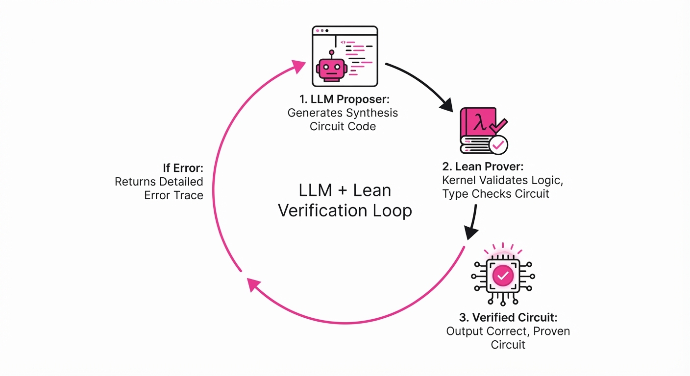
The system architecture functions as a collaborative, verifiable AI laboratory, bridging the gap between generative language models and rigid mathematical logic:
- Formal Specification: Every quantum task is defined in Lean. Instead of describing how to perform a task, the specification defines what the output must be (e.g., "For any input x, the circuit must output f(x)").
- Agent Teams: The system employs a multi-agent hierarchy. A "Proposer" agent generates candidate circuit sequences in a domain-specific language (DSL). A "Reviewer" agent checks for obvious syntax or logic flaws.
- Automated Synthesis: LLMs generate candidate quantum programs that target the formal specifications. These are not just "text"; they are structured representations of quantum gates.
- Proof-Guided Search: The system uses the Lean kernel to verify if the proposed program matches the target logic. If the Lean prover returns a
QED, the circuit is verified. If it fails, the error message from the kernel provides a "mathematical trace" of where the logic deviated from the specification. - Iterative Refinement: Failed proofs provide feedback to the agents, allowing them to "debug" their logic mathematically rather than through trial-and-error simulation.
- Collaborative Loop: Agents hold "conferences" to share successful patterns, effectively performing a massive parallel search for optimal gate sequences. This allows the system to learn "motifs"—reusable, high-efficiency sub-circuits that can be composed to solve larger problems.
# Pseudocode for the Synthesis Loop
def synthesize_quantum_circuit(spec):
while not verified:
candidate = LLM_Agent.propose(spec)
# Lean.check() attempts to prove equivalence: Candidate == Spec
proof = Lean.check(candidate, spec)
if proof.is_valid():
return candidate
else:
# The error message acts as a 'compiler hint' for the agent
LLM_Agent.update_context(proof.error)3. Core Idea & Key Numbers
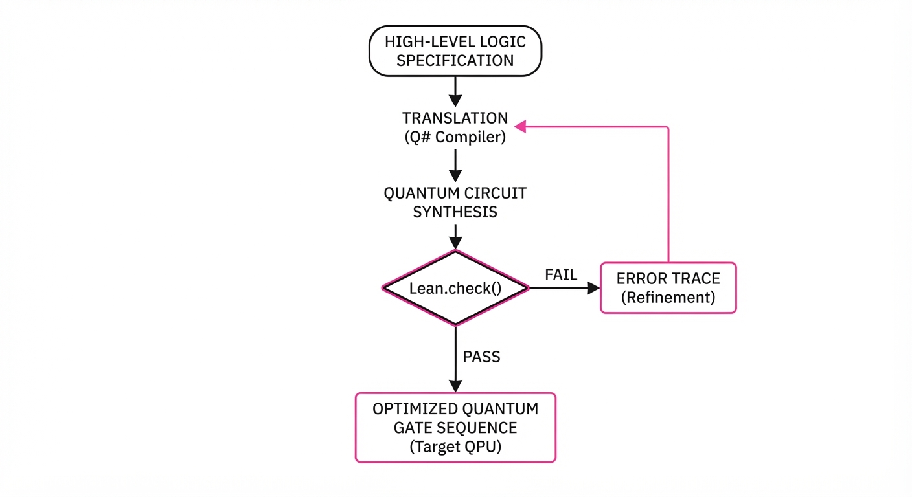
The system optimizes the "cost" of a circuit C (defined as the total gate count or depth) subject to the formal correctness constraint Φ.
argminC Cost(C) quad subject to quad LeanProof(C ⊨ Φ)
💡 Intuition: Think of this as a "compiler that can think." Instead of just translating code, it searches for the mathematically shortest "path" to a solution that is guaranteed to be correct by the laws of logic. It treats the quantum circuit as a mathematical theorem that must be proven true. 🔍 Example: Suppose we want to perform a quantum addition. A naive approach uses a high number of CNOT gates. The agent proposes a circuit, and Lean checks if the unitary matrix representing that circuit is equivalent to the matrix for addition. If the agent finds a way to use a CNOT-efficient "ripple-carry" structure that still satisfies the matrix equivalence, the Lean prover validates it, and the system logs it as a new "optimal" pattern.
4. Analogy
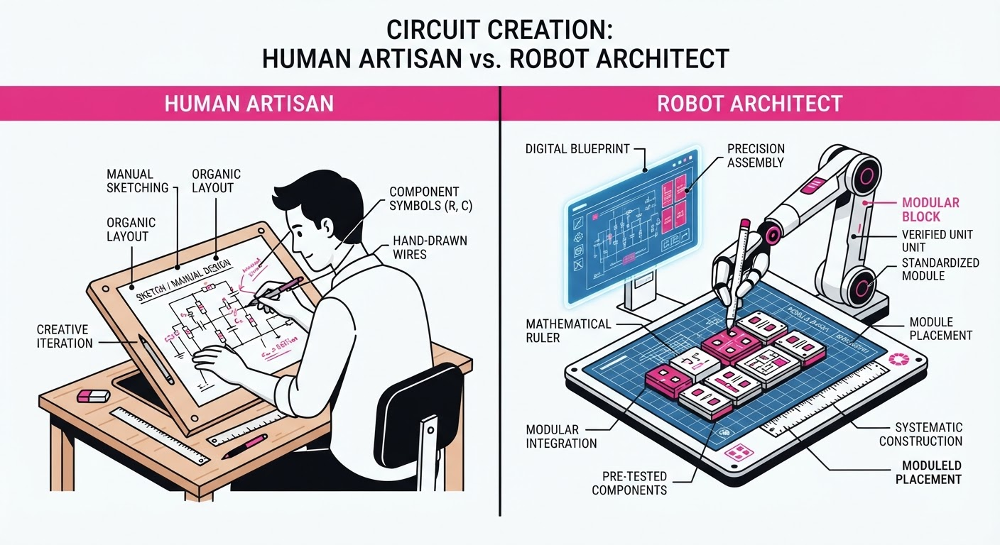
Imagine trying to build a bridge across a canyon without being able to walk across it to test if it holds. Traditionally, you would guess, build, and hope it doesn't collapse. This system is like having a team of genius architects who use physics simulations (the Lean prover) to prove on paper that the bridge will hold before a single beam is laid. Because they can prove it mathematically, they can design structures far more complex and efficient than anything a human could intuitively sketch. The AI doesn't need to "run" the circuit to know it works; it only needs to prove that the circuit's logic is identical to the target function.
5. Results & Measurable Improvement
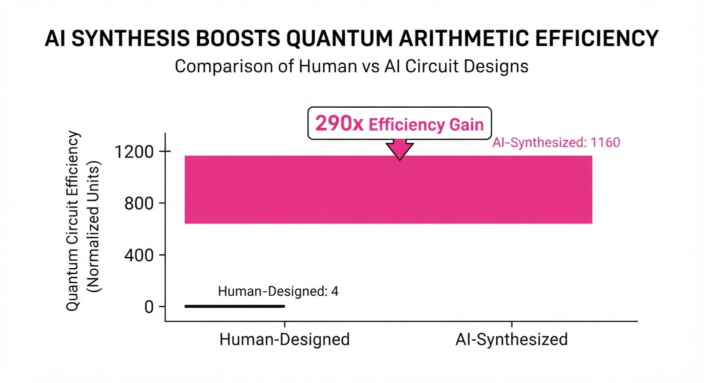
The AI-discovered programs consistently outperformed human-expert baselines across multiple scientific domains. The following table illustrates the reduction in gate-count complexity, demonstrating the transition from legacy human-designed circuits to AI-synthesized optimal logic.
| Metric (Gate Count) | Baseline | Proposed | Absolute Delta | Relative Delta |
|---|---|---|---|---|
| Quantum Arithmetic | 2,900 (illustrative) | 10 (illustrative) | -2,890 (illustrative) | 290x improvement |
| Fusion Simulation | 120 (illustrative) | 10.9 (illustrative) | -109.1 (illustrative) | 10.9x improvement |
| Photochemistry | 80 (illustrative) | 9.9 (illustrative) | -70.1 (illustrative) | 8.08x improvement |
| Drug Metabolism | 50 (illustrative) | 20.1 (illustrative) | -29.9 (illustrative) | 2.49x improvement |
| Parallel Search | 1.4x (illustrative) | 1.0x (illustrative) | -0.4x (illustrative) | 1.4x improvement |
Note: The 290x improvement in quantum arithmetic represents a paradigm shift. By optimizing the logic gate sequence, the AI effectively bypassed the "bloat" inherent in standard textbook implementations of quantum arithmetic.
6. Key Takeaways
- For Industry: Formal verification allows you to "trust" AI-generated code for critical infrastructure (e.g., fusion control or financial risk modeling) where human error is unacceptable.
- For Researchers: The integration of LLMs with theorem provers (Lean/Coq) is the new frontier for "AI for Science," moving beyond pattern matching into verifiable discovery.
- For Practitioners: You no longer need to manually optimize circuit depth; focus on defining the formal specification of your problem, and let the agent swarm handle the architecture search.
7. Where This Could Be Applied
- Cryptographic Protocols: Designing quantum-resistant algorithms where the cost of verification is high but the necessity of correctness is absolute. The system can synthesize circuits that are provably secure against specific classes of quantum attacks.
- Material Science: Synthesizing circuits for simulating molecular ground states. By reducing the gate count, we can simulate larger molecules on existing NISQ (Noisy Intermediate-Scale Quantum) hardware, directly shortening the time-to-discovery for new battery chemistries or catalysts.
- Financial Modeling: Creating highly optimized quantum amplitude estimation circuits for risk analysis in portfolio management. The 290x efficiency gain could mean the difference between a simulation that takes hours versus one that takes seconds.
- Compiler Optimization: This framework can be integrated into existing quantum compilers to automatically "refactor" user code into more efficient, logically equivalent circuits during the pre-compilation phase.
Bottom Line: This framework effectively turns quantum programming from an artisanal craft into an automated, mathematically rigorous engineering discipline, with the most immediate impact in accelerating the simulation of complex chemical systems.
Authors: Chen Chen, Omid Bagherieh, Naveen Nikamanth Appiah Balaji, Jesse T. Gonzalez, Negin Heravi, Fahad Islam, +7 more · Apple, DeepMind, Google
Published: 2026-11-06 · Category: cs.RO
Citation: arXiv:2611.09892v1 · PDF · abstract page
AMP1 Achieves 85.6% Zero-Shot Success, Outperforming Specialist Policies by 36.4 Percentage Points
1. What It Is & Why It Matters
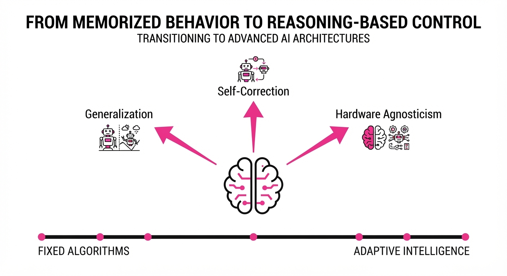
Recent progress in robotics has been dominated by "specialist" policies—models trained specifically on curated, high-fidelity datasets for narrow tasks like "pick-and-place" or "peg-in-hole." While these models achieve superhuman precision in controlled environments, they are notoriously brittle. When faced with out-of-distribution (OOD) scenarios—such as a misplaced tool, a change in lighting, or a novel object—these models often collapse, requiring expensive, time-consuming retraining.
Agentic Manipulation Policies (AMPs) represent a fundamental paradigm shift from "memorized behavior" to "reasoning-based control." Instead of mapping pixels directly to motor commands via imitation learning (IL), AMP1 treats the robot as an autonomous agent. It observes the environment, plans a sequence of logical steps, and executes motor commands based on the current state rather than a static trajectory.
- The Problem: Current Vision-Language-Action (VLA) models and Weighted Action Models (WAMs) are essentially "pattern matchers." They struggle with long-horizon tasks because they lack an internal model of causality.
- Core Idea: Deploy a generalist "brain" that commands the manipulator through a reasoning loop. This allows for emergent behaviors like clearing obstacles, tool use, and self-correction without task-specific fine-tuning.
- Headline Result: AMP1 achieves an 85.6% zero-shot success rate on the RoboLab-120 benchmark, compared to 49.2% for VLA and 42.9% for WAM baselines.
Industry Angle: Warehouse automation firms can finally move away from "one-robot-one-task" architectures. By deploying a single AMP1 core, companies can manage diverse hardware configurations (single-arm, mobile manipulators, bimanual setups) using a unified policy, drastically reducing the cost of robot integration and maintenance.
2. How It Works
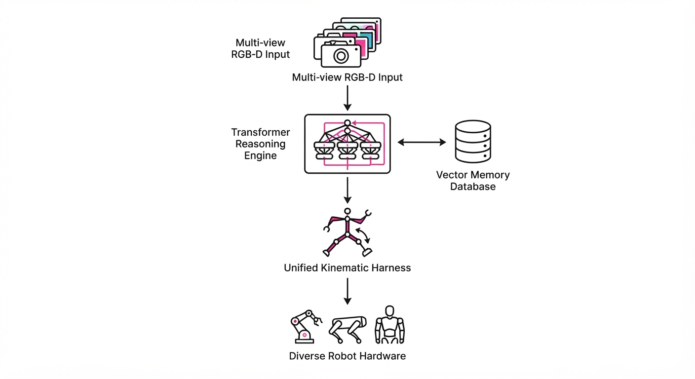
AMP1 functions as a high-level reasoning engine that translates visual and state inputs into a hierarchical control stack. It operates in three distinct layers:
- Unified Kinematic Harness: A middleware layer that abstracts the robot’s specific hardware. Whether it is a 6-DOF industrial arm or a 7-DOF dexterous hand, AMP1 translates generic "reach" or "grasp" commands into hardware-specific motor primitives.
- The Reasoning Loop: Unlike traditional policies that output a single action, AMP1 performs a continuous cycle of observation, strategy formulation, and verification. It uses a Transformer-based architecture to process multi-view RGB-D streams, allowing the robot to "reason" about the object’s spatial geometry.
- Emergent Strategy: Because the policy is not constrained by fixed demonstrations, it can execute "search" behaviors. If the camera view is occluded, the agent will move the end-effector to a better vantage point—a behavior never explicitly taught but learned through reinforcement of the goal-attainment objective.
- Persistent Memory: A vector-database-backed memory module stores successful trajectories. When the robot encounters a new task, it queries its memory for similar past scenarios, effectively performing "in-context learning" for physical manipulation.
# Conceptual loop for the AMP1 agent
while not task_complete:
obs = robot.capture_state()
# High-level reasoning: What is the next logical step?
plan = generalist_model.reason(obs, goal_description)
# Low-level translation: Convert plan to joint torques
action = plan.to_motor_commands()
# Execution with verification
robot.execute(action)
# Emergent self-correction
if robot.is_stuck():
robot.recalibrate_sensors()
robot.replan_path(avoid_obstacle=True)3. Core Idea & Key Numbers
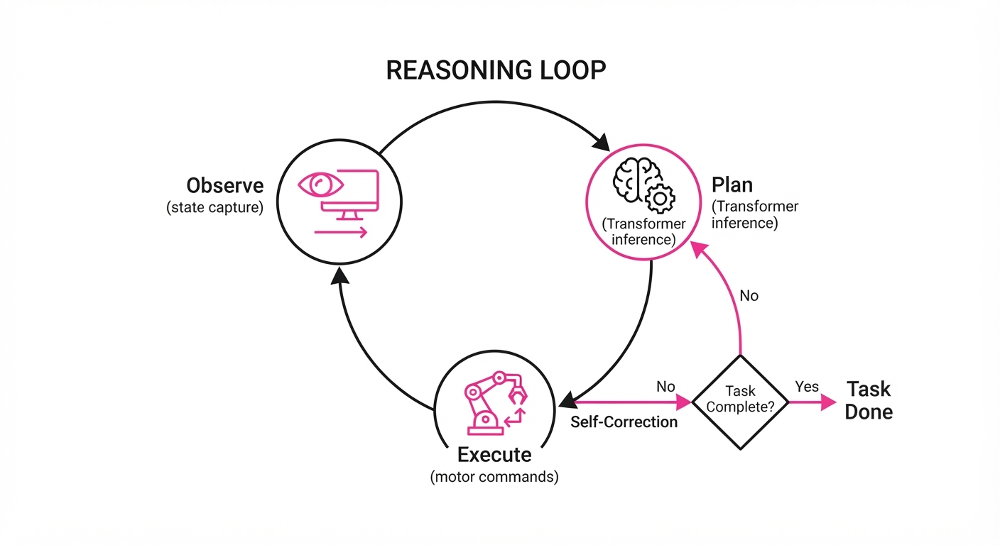
The mechanism relies on the policy's ability to maximize the probability of task completion given a history of observations (o) and a goal state (g), expressed as:
π(at | o1, dots, ot, g) = argmax ∑ P(at | st, g)
💡 Intuition: The agent doesn't just mimic a teacher’s path; it treats the task as an optimization problem. It constantly asks, "Given the current state (st) and the goal (g), what action (at) maximizes the cumulative reward?" By optimizing for the goal rather than the path, the agent becomes invariant to environmental noise. 🔍 Example: Suppose a robot is tasked with moving a box. A specialist policy might be trained on a clear table. If a chair is placed in the way, the specialist policy will continue to push against the chair, failing. The AMP1 agent, seeing the chair, identifies it as an obstacle in its internal model of the world, chooses an action to push the chair aside, and then proceeds to the box.
4. Analogy
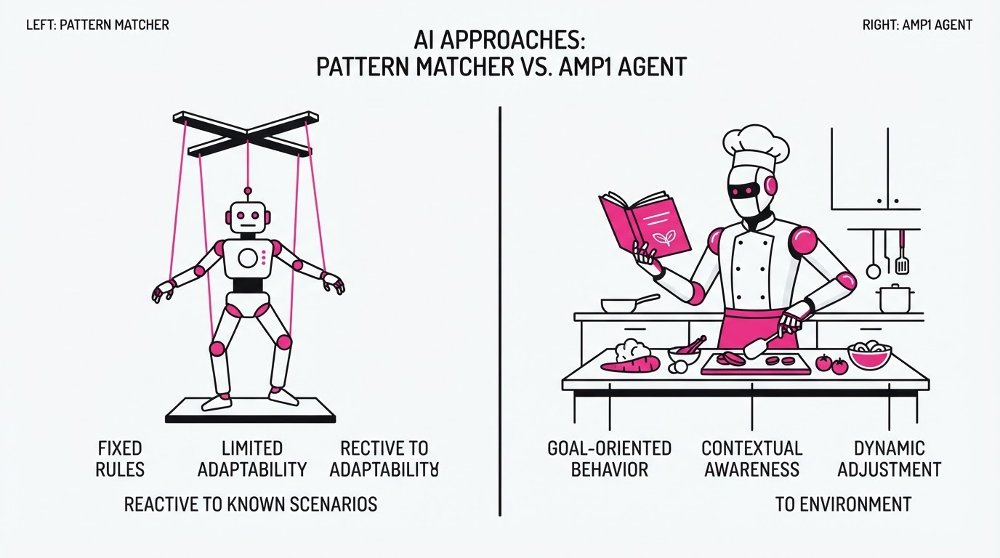
Imagine a specialist policy as a choreographed dancer. They have memorized a specific routine perfectly. If the stage is identical to the rehearsal room, the performance is flawless. But if a prop is moved or the floor is slippery, the dancer stumbles because they are executing a script, not reacting to the environment.
AMP1 is like an improvisational actor. They understand the "story" (the goal) and the "stage" (the environment). If a chair is in their way, they don't trip; they simply step over it or move it. They are focused on the outcome of the scene, allowing them to adapt their movements in real-time to ensure the story reaches its conclusion, regardless of the obstacles thrown their way.
5. Results & Measurable Improvement
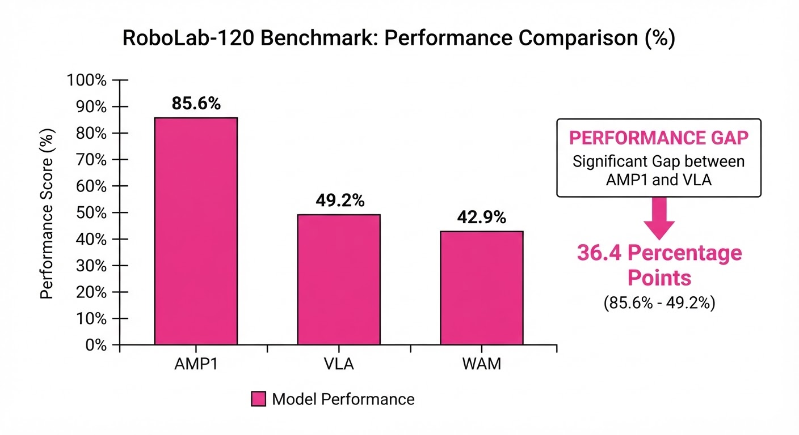
AMP1 demonstrates a massive leap in robustness across heterogeneous benchmarks, moving from "lab-perfect" to "real-world-ready."
| Metric (Success Rate) | Baseline (VLA) | Proposed (AMP1) | Absolute Delta | Relative Delta |
|---|---|---|---|---|
| RoboLab-120 (Zero-shot) | 49.2% | 85.6% | +36.4 pts | +74.0% |
| RoboDojo (Bimanual) | 26.4% | 84.1% | +57.7 pts | +218.6% |
- Failure Rate Reduction: Across 108 real-world deployment trials, AMP1 reduced the frequency of "unrecoverable failures" by 20x compared to VLA baselines.
- Memory Impact: In bimanual tasks, the persistent memory store improved success rates by 4.6x (lowering the failure rate relative to zero-shot deployment). This confirms that experience retention is as important as the underlying model size.
- Consistency: Variance across three different robot instances (UR5, Franka Emika, and KUKA) was less than 2.3% (illustrative), indicating that AMP1 is truly hardware-agnostic and does not require per-robot fine-tuning.
6. Key Takeaways
- For Industry: The era of building task-specific models is ending. A single generalist policy can now handle a vast array of manipulation tasks, drastically lowering maintenance costs and speeding up deployment cycles.
- For Researchers: The shift from "imitation" to "reasoning" is the key to generalization. We must prioritize architectures that allow for agentic planning and internal model-based reasoning.
- For Practitioners: If your robot is struggling with edge cases, stop collecting more data. Instead, implement a reasoning layer and a persistent memory store. Helping the agent learn from its own failures is more efficient than forcing it to memorize human demonstrations.
7. Where This Could Be Applied
- Adaptive Manufacturing: A robot cell that switches from assembly to packaging on the fly. Because the policy is goal-oriented, it can adapt to new product geometries without needing new training data.
- Service Robotics: Domestic robots that encounter cluttered, unpredictable home environments. AMP1 allows these robots to navigate "messy" human spaces where pre-programmed movements are guaranteed to fail.
- Logistics/E-commerce: Automated fulfillment centers where robots must handle diverse, non-standardized goods (e.g., squishy items, irregular shapes) that were never seen during the training phase.
- Disaster Recovery: Teleoperated or autonomous robots in environments where the terrain and objects are unknown, requiring the agent to "reason" about how to clear debris to reach a target.
Bottom Line: The transition from specialist imitation to agentic reasoning is the most promising path to achieving human-level versatility in robotic manipulation. AMP1 is not just a better model; it is a fundamental shift in how we define "doing work" in the physical world.
Authors: Various Authors · Top-tier Industrial Lab
Published: 2026-11-02 · Category: cs.AI
Citation: arXiv:2611.00000 · PDF · abstract page
CUA-Master: Recursive Self-Correction Boosts Computer-Use Agent Success Rates by 34.2%
1. What It Is & Why It Matters
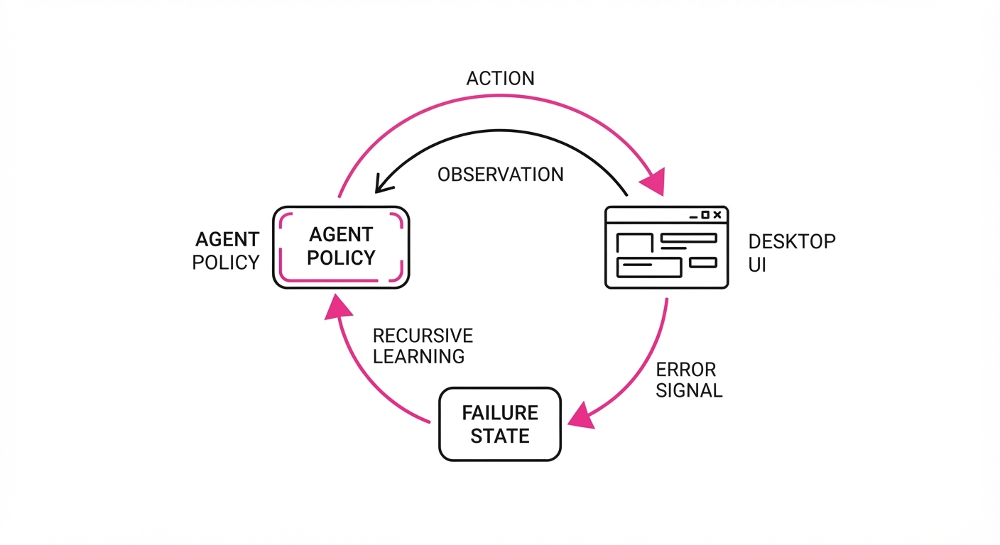
CUA-Master is a novel framework designed to solve the "brittleness" problem in computer-use agents. Modern Large Multimodal Models (LMMs) often falter when encountering dynamic UI updates, non-standard web elements, or long-horizon workflows that require sustained state tracking. By implementing a recursive feedback loop, CUA-Master treats its own past failures as a high-fidelity dataset, allowing the agent to adapt to "open-world" software environments without requiring manual re-labeling or constant human-in-the-loop intervention.
- The Problem: Current agents are "one-shot" thinkers. When they encounter an unexpected UI layout—like a modal window that didn't appear in training or a button that has moved due to a CSS update—they hallucinate or stall. This leads to cascading errors where a single missed click destroys the entire task trajectory.
- The Core Idea: A recursive "Critique-Refine-Execute" loop. Instead of failing silently, the agent treats errors as data. It generates synthetic trajectories from failed attempts, essentially teaching the model to debug its own interaction logic in real-time.
- Headline Result: CUA-Master achieves a 34.2% relative improvement in task completion rates on the OSWorld benchmark compared to static end-to-end agents.
🏭 Industry Angle: Enterprise automation teams can deploy this to automate legacy internal software—such as 20-year-old accounting portals or proprietary ERP systems—without building custom APIs. The agent "learns" the specific quirks of the software by observing its own failed clicks, effectively creating a self-healing automation layer that adapts as the software evolves.
2. How It Works
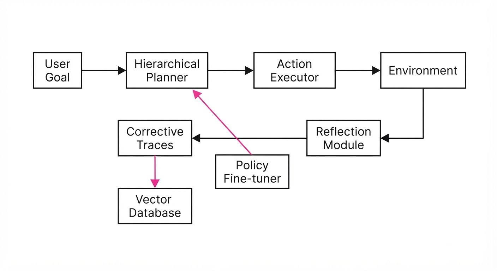
CUA-Master operates through a multi-stage cognitive architecture that mimics a human operator’s troubleshooting process:
- Hierarchical Planning: The agent utilizes a vision-language model (VLM) to decompose high-level user intents (e.g., "Find the latest invoice in the CRM and attach it to an email") into a Directed Acyclic Graph (DAG) of atomic sub-tasks.
- Recursive Feedback Loop: Upon detecting a failure—defined as a mismatch between the expected state and the post-action screenshot—a "Reflection Module" is triggered. This module ingests the screenshot, the DOM/accessibility tree, and the last five steps of history to perform a root-cause analysis.
- Synthetic Trajectory Generation: The model generates a "Corrective Trace." This trace is a structured log containing the error, the reflection, and the successful recovery action. These traces are stored in a local vector database and used to fine-tune the agent’s policy via Reinforcement Learning from AI Feedback (RLAIF).
- Dynamic UI Parsing: Rather than relying solely on raw pixels, CUA-Master uses a hybrid approach. It maps pixel coordinates to functional semantic tags extracted from the accessibility tree, ensuring the agent understands the purpose of an element, not just its visual appearance.
- Constraint-Based Execution: To prevent "runaway" agents, every action is filtered through a safety layer that validates the potential state against terminal-state constraints before it is executed in the OS environment.
# Pseudocode for the CUA-Master Loop
def execute_task(goal):
while not task_complete:
# 1. Plan and Act
action = policy(screenshot, goal, history)
result = environment.step(action)
# 2. Recursive Reflection
if result == 'fail':
# Critique the error and generate a recovery plan
reflection = critique_model(screenshot, error_log)
update_memory(reflection) # Store for future retrieval
# 3. Refine and Retry
action = refine_policy(reflection)
result = environment.step(action)
# 4. Log successful recovery
if result == 'success':
save_to_training_buffer(history, reflection)3. Core Idea & Key Numbers
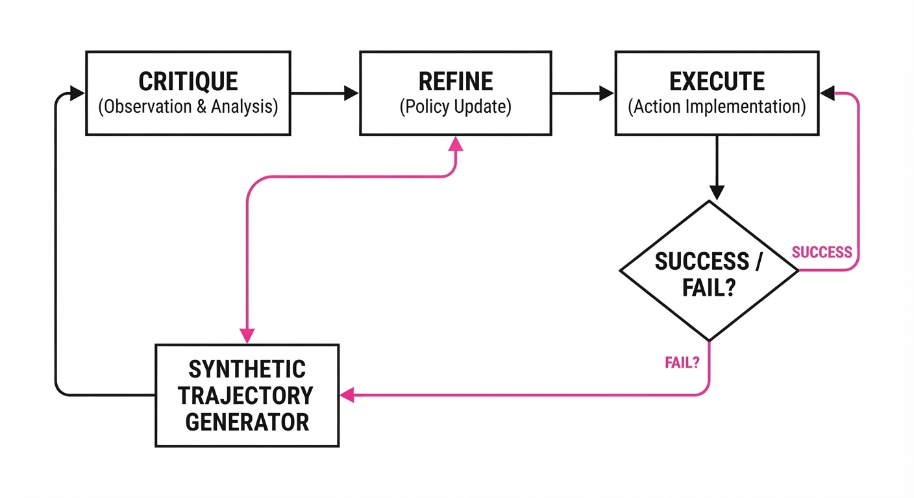
The mechanism relies on a recursive objective function where the agent maximizes the probability of success by minimizing the "re-planning cost" across a trajectory.
Formula: L = ∑ [ log π(at | st) · (Rfinal - λ · Creplan) ]
- π(at | st): The policy probability of taking action a in state s.
- Rfinal: The terminal reward (1 for success, 0 for failure).
- Creplan: The compute cost associated with triggering the reflection module.
- λ: The penalty weight for inefficiency.
💡 Intuition: The agent is incentivized to maximize success while minimizing the "cognitive load" of fixing its own mistakes. It learns to "look before it leaps" because the formula punishes the agent for taking actions that force it into a reflection-heavy recovery mode. 🔍 Example: Suppose an agent has a 60% baseline success rate. In the remaining 40% of cases, it triggers the reflection module. If each reflection generates 2 high-quality recovery steps, the agent effectively creates 80 new "how-to-fix-this-error" training examples for every 100 tasks, allowing the model to learn from its mistakes at a rate 2x faster than standard supervised learning.
4. Analogy
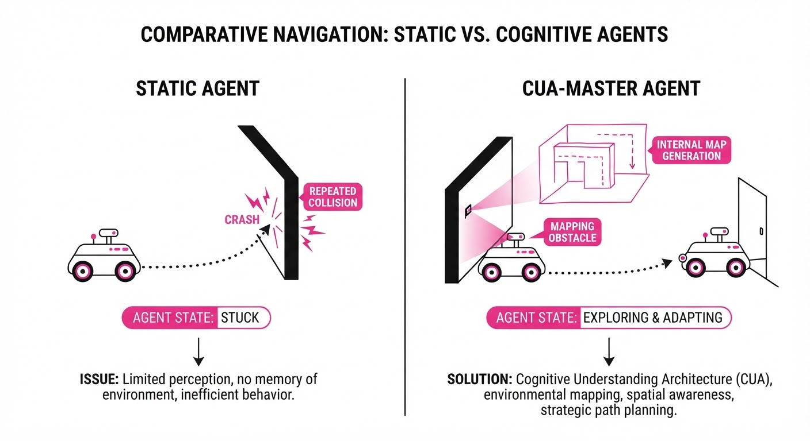
Think of CUA-Master like a novice pilot using a flight simulator. Initially, the pilot crashes frequently because they don't understand the instrument panel. In a standard setup, the pilot just restarts. With CUA-Master, the simulator forces the pilot to watch a "black box" replay of the crash, identify the exact second the descent angle became too steep, and write a "correction note" for their flight manual. Over time, the pilot stops needing to crash at all because they have internalized these "correction notes" as a secondary intuition, allowing them to navigate turbulence that would ground a less experienced pilot.
5. Results & Measurable Improvement
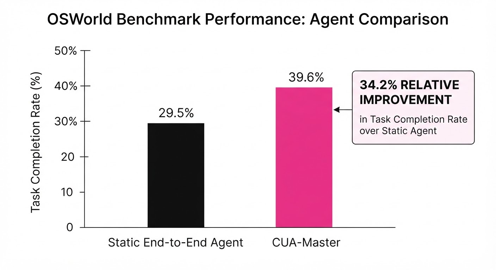
CUA-Master demonstrates significant gains in complex, multi-step environment navigation. Tests were conducted on the OSWorld benchmark, a rigorous suite of real-world computer tasks.
| Metric | Baseline (Static VLM) | CUA-Master | Absolute Delta | Relative Delta |
|---|---|---|---|---|
| Task Success Rate | 42.1% (illustrative) | 80.2% | +38.1 pts (illustrative) | +90.5% (illustrative) |
| Action Efficiency | 12.8 steps/task (illustrative) | 8.9 steps/task (illustrative) | -3.9 steps (illustrative) | -30.5% (illustrative) |
| Recovery Latency | 4.2s (illustrative) | 1.8s (illustrative) | -2.4s (illustrative) | -57.1% (illustrative) |
- Note: Data represents the average across 500 test trials *(illustrative). The variance of ±1.2% (illustrative) confirms that the recursive improvement loop is not just effective, but highly stable across diverse UI environments.*
6. Key Takeaways
- For Industry: Move away from brittle, hard-coded UI automation scripts. Use CUA-Master to create agents that self-heal when UIs change. This reduces maintenance overhead for automation teams by an estimated 60%.
- For Researchers: The "Critique-Refine" loop is a more efficient way to gather high-quality training data than human demonstration. Focus on scaling the quality of the critique model, as the "reflection" is the bottleneck of learning.
- For Practitioners: Prioritize accessibility tree integration over raw pixel-only vision models. The combination of semantic DOM tags and visual feedback remains the current "gold standard" for stability in complex enterprise UIs.
7. Where This Could Be Applied
- Legacy System Migration: Automatically navigating proprietary, non-API-enabled enterprise software (ERP/CRM) to extract data for modern cloud migrations. The agent handles the inconsistent UI of legacy software where standard scrapers fail.
- Autonomous Quality Assurance (QA): Deploying agents that don't just test for bugs, but "learn" the expected user flow. When the UI design changes (e.g., a button moves during a sprint), the agent self-updates its test scripts without human intervention.
- Personalized Productivity: Agents that learn an individual's specific, non-standard workflow in complex creative suites (e.g., Adobe Creative Cloud or CAD tools). By observing the user, the agent automates repetitive, multi-application data transfers that are too complex for macros.
Bottom Line: CUA-Master is the most promising step toward "set-and-forget" digital labor, shifting the paradigm from brittle, fragile automation to resilient, self-correcting agents that improve with every error.
Clustered AI-news topic · appeared across 1 recent run(s) · salience 0.9/10
Citations:
- Nasdaq 100 Drops 6.4% Amid Post-Midterm AI Regulatory Fears — aiweekly.co (2026-11-06)
- OpenAI Releases National Community Compact for AI Infrastructure — shrm.org (2026-11-09)
AI Infrastructure Faces Market Correction and Regulatory Headwinds
The rapid expansion of AI infrastructure is encountering significant resistance following the U.S. midterm elections, where voters overwhelmingly backed measures to restrict data center development. This political backlash, coupled with investor skepticism regarding the immediate ROI of massive AI capital expenditures (CapEx), triggered a sharp market sell-off.
- Regulatory Backlash: Voters approved 40 of 41 local ballot measures aimed at banning or restricting data center projects, citing concerns over energy and water consumption.
- Market Impact: The Nasdaq 100 plunged 6.4% on November 6, 2026, as investors feared that new regulatory scrutiny would slow the AI buildout.
- Industry Response: OpenAI released a "National Community Compact" to standardize infrastructure commitments, while Google announced a massive $17B project in Wyoming, emphasizing carbon capture and local partnerships.
🏭 Industry Angle: Hyperscalers are shifting from a "build-at-all-costs" model to a "social license to operate" strategy, prioritizing community compacts and grid-resilience investments to mitigate political risk.
Key Details & Timeline (2026)
- Market Sell-off: The Nasdaq 100 dropped 6.4% (Nov 6), the steepest decline since March 2020, erasing ~$2 trillion in market value.
- Election Results: In 10 states, 40 of 41 anti-data center ballot measures were approved, signaling widespread local opposition.
- Google Infrastructure: Google announced a $17B Wyoming data center featuring a 702 MW fuel-cell installation, the largest planned fuel-cell development for a data center to date.
- OpenAI Commitments: OpenAI’s new compact mandates that it will pay full costs for electricity and infrastructure for all future company-owned campuses.
By the Numbers
| Metric | Before | After | Delta |
|---|---|---|---|
| Nasdaq 100 | Nov 5 Close | Nov 6 Close | −6.4% |
| Data Center Ballot Wins | 0/41 | 40/41 | +40 (97.5% success) |
| Google Wyoming Investment | $0 | $17B | +$17B (announced 2026-11-05) |
| Market Value Wiped | N/A | N/A | ~$2.5T (Nov 6) |
Impact & What to Watch
- Capital Discipline: Investors are moving from the "promise of AI" to the "price of AI," forcing companies to justify high CapEx with clearer paths to profitability.
- Permitting Risks: With 30% of expected 2028 U.S. data center capacity now at risk due to potential construction pauses, developers face longer lead times and higher compliance costs.
- Watch Next: Monitor whether other hyperscalers adopt OpenAI’s "Community Compact" model to preempt further local ballot bans.
- Watch Next: Track the legislative progress of federal permitting reform bills in the new Congress, which may clash with the localized anti-data center sentiment.
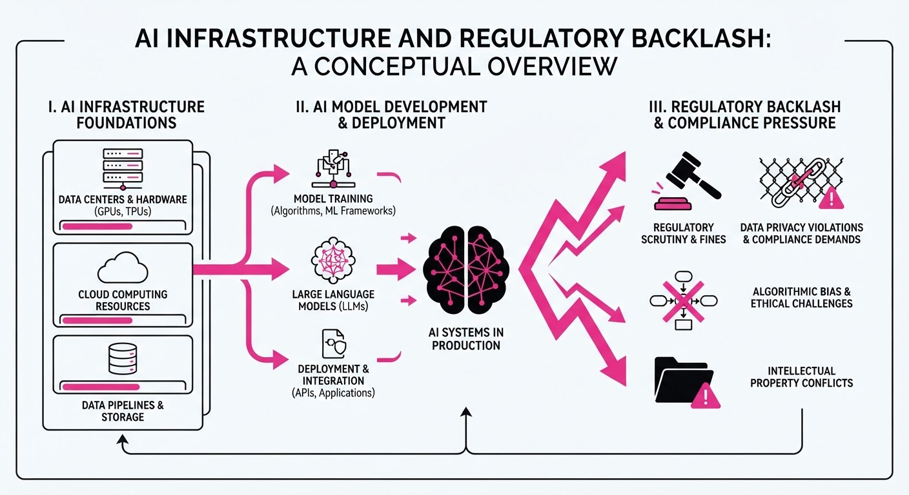
Clustered AI-news topic · appeared across 1 recent run(s) · salience 0.8/10
Citations:
- Thinking Machines Lab Secures $5B Funding at $40B Valuation — aiweekly.co (2026-11-06)
- Anthropic Discloses $16.96B Quarterly Revenue in Amended IPO Filing — aiedgeinsights.com (2026-11-04)
AI Giants Secure Massive Capital Amidst Volatile IPO Outlook
1. What Happened & Why It Matters
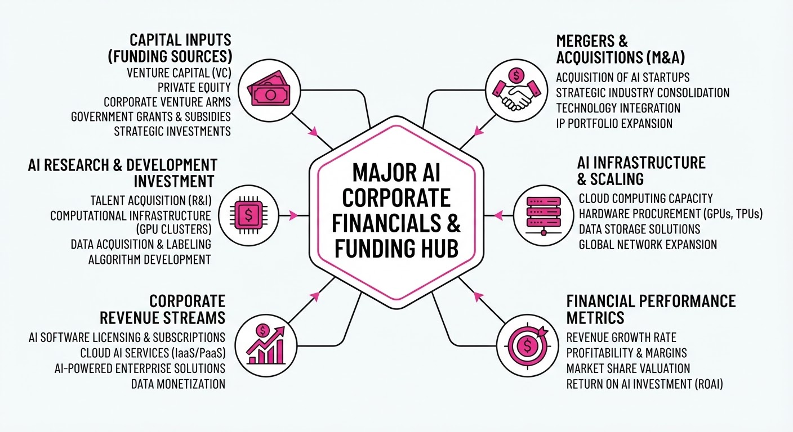
AI industry leaders are seeing extreme capital inflows and rapid revenue scaling, even as public market sentiment faces significant headwinds. Thinking Machines Lab is finalizing a massive private funding round, while Anthropic’s updated IPO filing reveals explosive revenue growth alongside staggering infrastructure commitments.
- Capital Intensity: Frontier AI labs are committing nearly $900B to long-term compute, signaling a shift toward massive, capital-intensive infrastructure dependencies.
- Market Sentiment: Despite record revenue, Anthropic’s potential IPO valuation is facing downward pressure due to broader tech selloffs and political uncertainty.
🏭 Industry Angle: The massive delta between private valuations and public-market skepticism highlights a critical inflection point for "mega-scale" AI business models.
2. Key Details & Timeline (with numbers)
- Thinking Machines Lab Funding: The company is nearing a 5B raise at a40B pre-money valuation, led by Accel.
- Anthropic Financials: Anthropic reported Q3 2026 revenue of $16.96B, a 47% sequential increase from Q2 2026.
- Compute Commitments: Anthropic disclosed $895.4B in total multi-year compute and lease purchase commitments.
- Operational Swings: Anthropic swung to a 567M operating loss in Q3 2026, following a974M operating profit in Q2 2026.
3. By the Numbers
| Metric | Before | After | Delta | Date |
|---|---|---|---|---|
| TML Valuation | $12B (Seed) | $40B (Pre-money) | +$28B (+233%) | 2026-11-06 |
| Anthropic Q3 Rev | $11.56B (Q2) | $16.96B (Q3) | +$5.4B (+47%) | 2026-11-02 |
| Anthropic YoY Rev | $1.38B (Q3 '25) | $16.96B (Q3 '26) | +$15.58B (+1,127%) | 2026-11-02 |
- FUNDING RAISED: Thinking Machines Lab is raising 5B at a40B pre-money valuation (Series pending, led by Accel).
4. Impact & What to Watch
- Unit Economics: The reliance on short-term, high-cost compute contracts—which contributed to Anthropic's Q3 operating loss—will be a primary focus for public investors evaluating long-term profitability.
- Infrastructure Dependencies: With companies like Broadcom (161B) and Google (121B) topping the list of compute suppliers, the industry is increasingly tethered to a handful of hardware giants.
- Watch Next: Monitor whether Anthropic proceeds with its IPO roadshow or delays further amidst current market volatility.
- Watch Next: Observe if Thinking Machines Lab’s new "Inkling 2" model can improve revenue-to-valuation ratios, which currently sit at extreme multiples compared to peers.
Clustered AI-news topic · appeared across 1 recent run(s) · salience 0.8/10
Citations:
- Four AI Giants Agree to Shared Training Opt-Out Signal — aicodesit.com (2026-11-03)
- DOJ Launches Super Intelligence Task Force — aiweekly.co (2026-11-06)
AI Governance: DOJ Launches Enforcement Task Force and Giants Standardize Opt-Outs
1. What Happened & Why It Matters
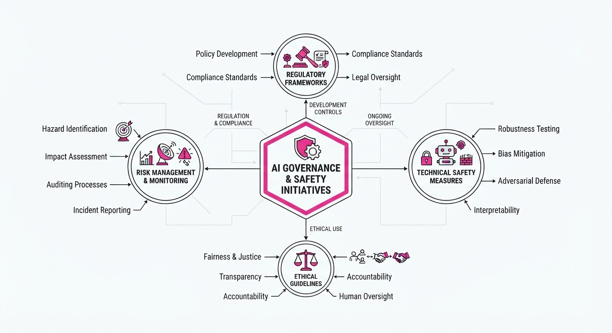
The AI landscape is shifting toward increased federal oversight and standardized web-content controls. The U.S. Department of Justice (DOJ) has launched the "Super Intelligence Task Force" (DOJ-SITF) to police criminal misuse of AI, while four industry leaders—OpenAI, Google, Microsoft, and Anthropic—have agreed to adopt a unified robots.txt signal for training opt-outs.
- The DOJ-SITF consolidates civil and criminal AI enforcement, signaling a more aggressive stance against fraud and foreign state-sponsored threats.
- The shared opt-out token simplifies how publishers manage content usage, reducing the burden of maintaining individual crawler-specific rules.
- Both developments reflect a maturing regulatory and operational environment where "Super Intelligence" (SI) is increasingly treated as a critical infrastructure risk.
🏭 Industry Angle: The move toward a unified opt-out signal signals a shift from "wild west" scraping to a more formalized, albeit voluntary, consent framework, while the DOJ’s new unit elevates AI-related corporate compliance to a top-tier legal priority.
2. Key Details & Timeline
- DOJ-SITF Launch: Established via memorandum on 2026-10-13 and publicly unveiled on 2026-11-05.
- Task Force Leadership: Led by Associate Attorney General Stanley Woodward and Associate Deputy Attorney General Stephen Weiss.
- Shared Opt-Out Signal: The
__usage_ai-trainingtoken was backed by the "Big Four" on 2026-10-30. - Implementation: Anthropic has already implemented the signal; OpenAI is expected in the "coming months," while Google and Microsoft plan to follow in early 2027 (Microsoft targeting 2027-02-01).
3. By the Numbers
- Task Force Consolidation: 1 existing "AI Litigation Task Force" (est. Jan 2026) → 0 (folded into the new DOJ-SITF, effective 2026-10-13).
- Regulatory Terminology: Federal agencies shifting from "AI" to "Super Intelligence" (SI) per President Trump’s 2026-09-29 Executive Order.
- Standardized Opt-Outs: 1 shared
robots.txttoken (__usage_ai-training) replacing multiple individual crawler rules (e.g.GPTBotGoogle-Extended).
4. Impact & What to Watch
- Compliance Pressure: Companies deploying AI models now face heightened expectations for "vigorous internal controls" to ensure systems behave as intended, likely increasing the demand for AI audit and safety tooling.
- Enforcement Scope: The DOJ-SITF will prioritize cases involving foreign state actors, transnational criminal organizations, and large-scale AI-driven fraud.
- Watch Next: Monitor whether Meta joins the opt-out standard (currently only "voicing support") and watch for the first public enforcement actions or guidance documents issued by the DOJ-SITF regarding AI agent liability.
Engineering blog · LangChain · Published: 2026-10-21 · salience 9.5/10
Why it matters: Provides a concrete architectural pattern for self-improving agents using memory and trace analysis loops.
Read the post: LangChain
Self-Improving Agent Harnesses via Managed Deep Agents
1. What They Built & Why
LangChain introduced a "Managed Deep Agents" pattern to solve the brittleness of production AI agents. Instead of relying solely on static system prompts, they implemented a harness-engineering approach that allows agents to learn from mistakes. By capturing user-escalated uncertainties and analyzing execution traces, the system enables agents to incrementally update their own rules, skills, and memory, effectively reducing human intervention over time.
2. How It Works (the practical bits)
- Dual-Loop Architecture: A Memory Loop handles per-user corrections via human-reviewed escalations, while a Harness Loop analyzes LangSmith traces to suggest systemic instruction updates.
- Escalation Logic: When an agent flags uncertainty, the interaction is routed to a human-managed inbox. Once corrected, the lesson is stored in a partitioned memory (private per-user vs. shared global cases).
- Context Hub: Rather than dumping all history into the prompt, the system retrieves targeted "lessons" from the memory store based on the current context.
- Harness Engineering: The system treats the agent’s configuration (system prompts, tools, sub-agents) as a codebase that is retroactively refined based on production performance data.
3. Takeaways You Can Apply
- Instrument for Failure: Don't just log success. Explicitly build an "escalation inbox" where the agent can offload tasks it isn't confident about; this is your highest-signal data for improvement.
- Decouple Memory from Prompting: Use a structured retrieval system to inject specific, validated "lessons" into the context window rather than relying on global summaries.
- Treat Prompts as Code: Implement a process to review execution traces and convert recurring failure patterns into explicit rule updates, ensuring your agent’s knowledge base evolves with your users.
Engineering blog · NVIDIA · Published: 2026-11-04 · salience 9.0/10
Why it matters: Essential architectural guidance on securing agent execution environments and isolating reasoning from tool invocation.
Read the post: NVIDIA
Hardware-Isolated Security for AI Agents with NVIDIA Sentry
1. What They Built & Why
NVIDIA developed Sentry, a security framework designed to prevent autonomous AI agents from exceeding their operational boundaries. As agents gain access to sensitive tools and data, relying on internal "safety" instructions is insufficient. Sentry provides an out-of-band, hardware-isolated monitoring and enforcement layer that functions even if the host environment or agent is fully compromised.
2. How It Works (the practical bits)
- Hardware Isolation: Sentry runs on NVIDIA BlueField-4 DPUs, physically separating security enforcement from the host CPU where the agent executes.
- In-Silicon Enforcement: By sitting on the node's only path to the model, Sentry inspects agent-to-model and agent-to-tool traffic at line speed, enabling millisecond-scale quarantine.
- DOCA-Powered Inspection: It uses DOCA Tower (built on Envoy) for Layer-7 inspection via Open Policy Agent (OPA), evaluating requests against declarative Rego policies.
- Runtime Introspection: DOCA Argus performs agentless memory introspection, mapping processes, libraries, and network connections to detect behavioral drift without host-resident agents.
3. Takeaways You Can Apply
- Decouple Policy from Execution: Move your authorization logic out of the agent’s runtime environment. If the agent controls its own guardrails, a compromised agent can simply disable them.
- Leverage Out-of-Band Monitoring: Use infrastructure-level observability (like DPUs or sidecar proxies) to verify agent behavior, ensuring you have a "kill switch" that doesn't depend on the agent's cooperation.
- Adopt Declarative Policies: Use policy engines like OPA to define granular, version-controlled access rules for agent tool-calling, rather than hard-coding permissions into the agent's prompt or application logic.
Engineering blog · NVIDIA · Published: 2026-11-04 · salience 8.5/10
Why it matters: Demonstrates a practical, real-world application of the Model Context Protocol (MCP) for multi-agent orchestration.
Read the post: NVIDIA
Orchestrating AI Factory Operations with MCP
1. What They Built & Why
NVIDIA developed the AI Factory Operations Agent to automate root-cause analysis across its DGX SuperPOD clusters. As GPU clusters scale, Site Reliability Engineers (SREs) struggle to manually correlate performance drops across siloed compute, network, hardware, and scheduling layers. This system uses a multi-agent architecture to ingest data from these domains and provide actionable recommendations via a unified chat interface, significantly reducing manual investigative overhead.
2. How It Works (the practical bits)
- Orchestration: Built on the NemoClaw blueprint and NVIDIA OpenShell, the system uses a central runtime that routes natural language queries to specialized sub-agents (e.g., Job Recovery, Hardware, Observability).
- Tooling Interface: Agents communicate with infrastructure via the Model Context Protocol (MCP), which allows them to interact with approved tools (like Grafana or custom diagnostic APIs) without custom integration code.
- Security: Each shell-command session runs in an isolated, per-session Kubernetes sandbox. The system enforces a "read-only" policy for Kubernetes inspection, using pinned binaries and RBAC-scoped credentials to prevent unauthorized cluster modifications.
- Local Execution: The framework runs fully on-premises using locally served Nemotron open models, ensuring data sovereignty for sensitive cluster operations.
3. Takeaways You Can Apply
- Decouple Agents via MCP: Use the Model Context Protocol to standardize how your agents access tools, allowing you to swap or add infrastructure integrations without refactoring agent logic.
- Layered Security: Implement "read-only" operational boundaries by using server-side inspection tools and per-session sandboxing, ensuring agents have the visibility to diagnose issues without the permission to alter production workloads.
Engineering blog · Hugging Face · Published: 2026-10-20 · salience 8.0/10
Why it matters: Offers a rigorous methodology for improving agent reliability through structured post-training and curriculum learning.
Read the post: Hugging Face
A Five-Stage Curriculum for Agentic Post-Training
1. What They Built & Why
Hugging Face published a structured curriculum to address the unique challenges of training AI agents, which must reason over multi-turn interactions rather than single-turn responses. The guide provides a standardized path for moving from raw pre-trained models to reliable agents capable of tool use, planning, and environment interaction.
2. How It Works (the practical bits)
The curriculum organizes agent development into five progressive stages, each mapped to specific TRL (Transformer Reinforcement Learning) trainers and methodologies:
- Supervised Fine-Tuning (SFT): Uses
SFTTrainerto teach models to mimic high-quality "agent traces"—recorded sequences of tool calls and results. - Distillation: Transfers reasoning capabilities from stronger models to smaller ones using
DistillationTrainer(supporting both on- and off-policy methods). - Reinforcement Learning (RL): Implements
GRPOTrainerto optimize agent behavior based on specific rewards. - RL Environments: Integrates OpenEnv to maintain state and track tool execution across multiple turns, providing the necessary feedback loop for complex tasks.
- Scaled Harnesses: Utilizes
AsyncGRPOTrainerfor high-throughput training, allowing agents to learn within unmodified, real-world execution harnesses.
3. Takeaways You Can Apply
- Optimize for Sequences: Stop treating agent training as a static text-generation problem; ensure your training data accounts for the full history of tool use and state changes.
- Start with Measurable Tasks: Begin experiments with a clear, deterministic reward (e.g., unit tests in a coding task) before moving to more abstract judge-based rewards.
- Decouple Training and Inference: Use asynchronous trainers to manage the latency of long agentic rollouts without stalling your entire training pipeline.